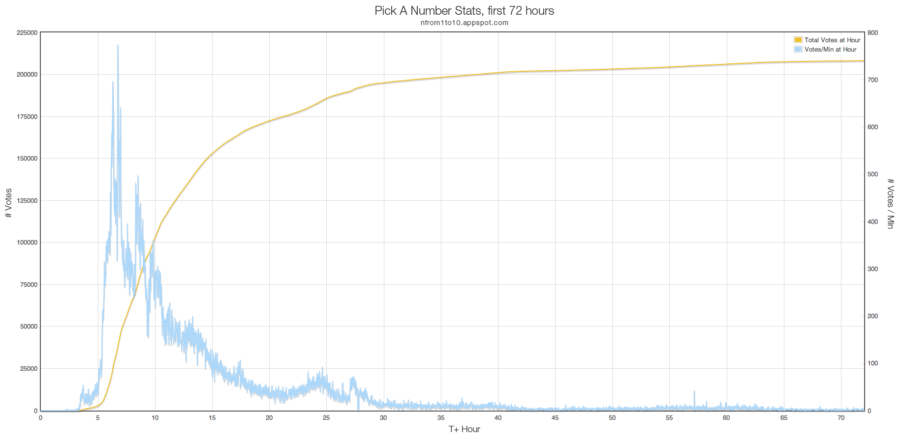

Talk about getting caught off-guard: Pick A Number, an impulse project that was not expected to gain any real traction, ended up getting more than 180,000 number picks from over 150,000 people in the first 24 hours of its being live. Here are some thoughts on why things happened the way they did. For the (still in-progress) results, see the Pick A Number results page.
I was helping a friend revise a post on arbitrary versus random. We had heard that when asked to pick a number from 1 to 10, people pick 7 more than other numbers, but couldn't find much more than conjecture about it.
(I have since found A Random Number, which asks for a random number between 1 and 100. Probably due to different phrasing — "a number from" vs "a number between" — it didn't show up in initial, admittedly limited, Google searching.)
In the end, I would hopefully be able to get a graph showing the distribution of number choices:
I spent a little over two hours putting it together, deeming it "sufficient" and deploying at around 2am, Sunday.
I first posted a link to Twitter. Unsurprisingly, there were no bites since it was early Sunday morning. After waking up, I decided to put it on HN. It didn't get any votes for a little while.
I told two friends to up vote it, so it could get a little attention and hopefully reach the 100 responses faster.
…Which it did.
With that slight seed of activity, the post started getting more attention and soon reached the front page. Once there, the number of responses reached several thousand very quickly. For someone whose personal projects don't reach that much activity in a whole month, the volume of responses was startling.
Then it got posted to Reddit, and boom goes the dynamite. The overall number of responses after 48 hours was literally 2,000 times what I expected for an entire week. (And I do mean 'literally' literally.)
Here are the votes and the votes per minute during the first 72 hours.

And here is a heatmap showing the geolocated votes during the first ~20 hours. Each frame is one minute of votes, playing back at 30 fps.
There are several factors that I think contributed to the rapid growth.
The main factor, personality, was provided by the "For SCIENCE!" flair. Looking through the comments on various places, particularly on Reddit, I can see that the it went over really well. Added nearly on a whim, it provided an admittedly silly 'rallying cry' of sorts. This little bit of personality went a long way.
Looking around at other places the link was shared, the "For science!" bit definitely took hold:
[Update: A poll, whichshiftbutton.com, posted to HN on 31 May 2011, also uses the "For Science" tag, though unfortunately as an image instead of CSS3 transformations. Does this count as starting a trend?]
The two other factors, simplicity and mystery, came about more because of my desire to build as little as possible than anything else. The simplicity of just the basic instructions and a number picker kept the focus very narrow, even in the Reddit comments. The mystery, as in lack of information about who was behind the experiment or why it was being done, led to people speculating on both in the comments of Reddit and HN. This helped to increase the activity profile of the postings, attracting further attention. An additional point of intrigue was that there were four possible UIs for choosing a number, which resulted in quite a bit of discussion about that aspect.
Had I known this little impulse project would garner such a response, there are a few things I would've done differently:
First, I would have put stats tracking tasks in place from the beginning, with a results page ready to go (though not immediately visible).
Second, some questions about the logic behind a user's choice, similar to "A Random Number", would have followed the initial number choice. All that this data has demonstrated is the distribution of number choices. It doesn't provide any information as to why people pick what they do.
Third, one of the metrics would be referrer, to see if different crowds result in different distributions.
Some other lessons include:
Reddit is huge. I didn't realize just how big it is. Once Pick A Number hit Reddit, it quickly started getting hundreds of votes per minute. This extra attention also meant a handful of people tried to mess with it, submitting false data directly. One in particular sent over 4,000 votes in an automated way. (It wouldn't have been hard. It could've been done in the console of Chrome or Firebug even.) Thanks to IPs being one of the metrics, I was able to clear them out pretty easily.
StumbleUpon is great for the long-tail. Even over a week later, Pick A Number consistently gets 3-4,000 unique views, mostly from stumbleupon.com.
Timing helps. Posting on a Sunday, when there was less real news, allowed the Hacker News post to stick around in both the new page and the front page longer.
AppEngine is pretty great for quickly prototyping something that can scale without much thought. It's cheap, too. I had to enable billing in order to keep it going, as the app shot past its CPU and bandwidth quota. But, the overall cost is still well under 1.00$. There are some gotchas with AppEngine, though, such the 1000 item query limit. This means you have to be efficient about how you handle the data from the very beginning if you want to work with large quantities of it all at once.
Not being used to having a project get so much traffic so quickly, the Analytics numbers have been a bit stupifying, as has the number of data points. I've dumped everything to a local MongoDB database for more flexible manipulation, and Supriyo is helping me put together some proper statistics. Once those are available, they'll go up on the results page. I'll also probably do a deeper breakdown, particularly of the UIs, and post it here.